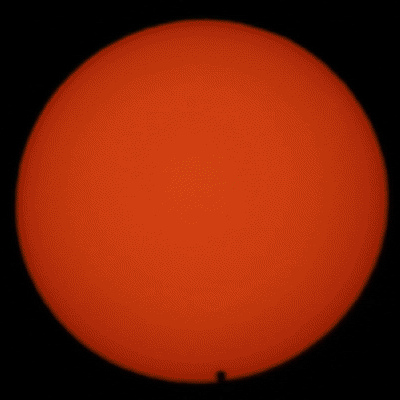

# Geometry of a transit <p></p> -v- ## Depth -v- ## Duration -v- ## Limb Darkening -v- ## Eccentricity? --- # Accessing photometric data lightkurve --- # Detecting exoplanet transits Exoplanets are (usually) extremely periodic. Therefore searches typically iterate through period/frequency space. -v- ## Packages for exoplanet detection - bls (e.g. [astropy.timeseries](https://docs.astropy.org/en/stable/timeseries/bls.html); see also [lightkurve docs](https://lightkurve.github.io/lightkurve/tutorials/3-science-examples/exoplanets-identifying-transiting-planet-signals.html)) - [transitleastsquares](https://transitleastsquares.readthedocs.io/en/latest/) - [GerBLS](https://gerbls.readthedocs.io/en/latest/) - [Nuance](https://nuance.readthedocs.io/en/latest/) --- ## Modelling stellar noise - Spline (e.g. cubic bspline, implemented using e.g. scipy.interpolate) - Filtering (e.g. Savitsky, or median filter, implemented with e.g. astropy.timeseries or scipy.signal or wotan) - Gaussian Process (e.g. SHO, implemented with e.g. celerite or tinyGP) --- ## Other complications -v- Transit timing variations -v- Spot-crossing events -v- Stellar contamination -v- Atmospheric transmission --- ## How to model exoplanet transits